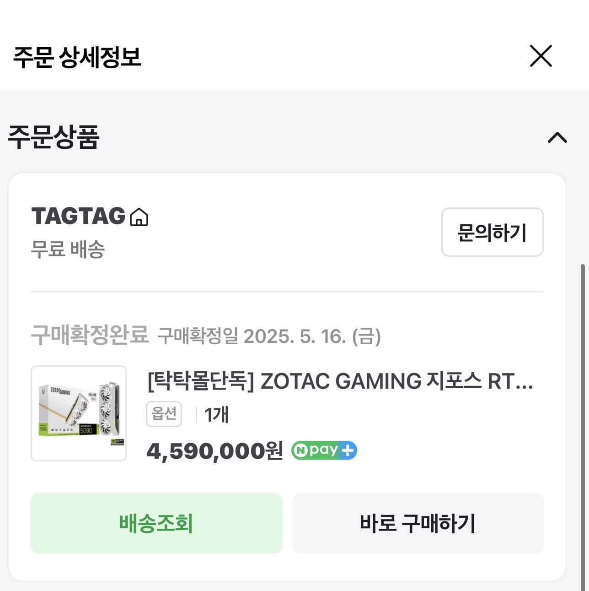
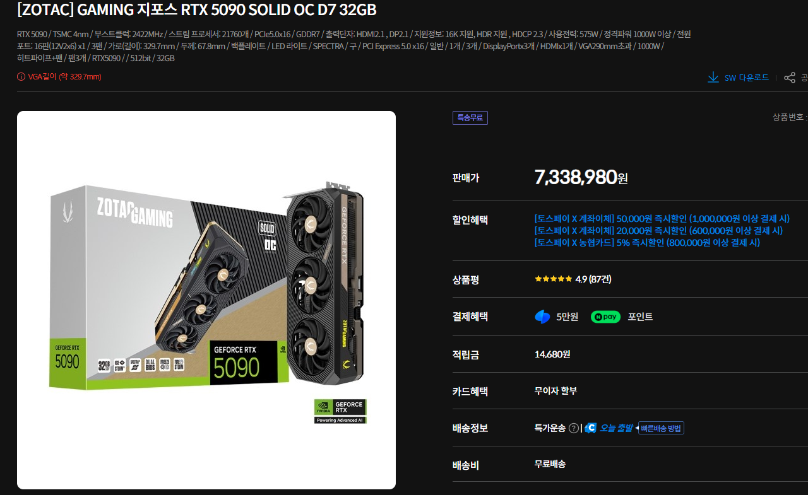

23년 당시 컴덕 : 미쳤나 집안 기둥뿌리 뽑을려고하나, 무슨 글카가 거의 200 이냐!!!

25년 당시 컴덕 : 무슨 그래픽카드 하나가 반 천만원 가까이 하냐 곧있으면 중고차 가격 나오겠네

현재.... 참고로 저것도 품절이라서 덜오른거임 이제 800임
한줄요약 : ㅅㅂ 컴덕죽네 살려줘
23년 당시 컴덕 : 미쳤나 집안 기둥뿌리 뽑을려고하나, 무슨 글카가 거의 200 이냐!!!

25년 당시 컴덕 : 무슨 그래픽카드 하나가 반 천만원 가까이 하냐 곧있으면 중고차 가격 나오겠네

현재.... 참고로 저것도 품절이라서 덜오른거임 이제 800임
한줄요약 : ㅅㅂ 컴덕죽네 살려줘
댓글
수집 당시 댓글 42개
바이탈머신 · 2 시간 전
컴퓨터는 도구지 뭐
유리멘탈 · 2 시간 전
9070xt 94.9에 탑승 현재 159.8 ㄷ
띳띠 · 2 시간 전
오르기전에 5080 140에 탑승 잘했다
탈퇴했다가재가입 · 1 시간 전
시발 8월초에 울트라 5080 200에 샀는데
위행위자 · 2 시간 전
거지라서 플스 프로 삼ㅠ
쩔뚜기 · 2 시간 전
라뎅 rx9700xt 80만원대에 사서 쓰는중인데 몇타취냐?
봉쥬 · 2 시간 전
1660아 사랑해 우리 평생 함께하자
꼬꼬마동산 · 2 시간 전
200만원 주고산 3070아 평생가자 ㅠㅠ
아시엘 · 2 시간 전
5080아 10년만 힘내자
ediredo · 2 시간 전
냉장고 티비 에어컨 보다 비쌈
번째가슴 · 2 시간 전
ㄹㅇ인가
졸려요 · 2 시간 전
5090이후로 소비자용 글카 안나왔으면 좋겠다........
Lvofpp · 1 시간 전
왜
졸려요 · 18 분 전
다음 버전은 가격이 미칠것 같으니까......
번째가슴 · 2 시간 전
RTX 3080 은 현역인가요? 퇴물인가요??
익명
현역입니다 마구굴리세요(고장만 안나게)
어라라라 · 1 시간 전
현역이라기엔 이제 나올 게임들 3080으로 진짜 돌아만 가는 수준되는것 같던데 ㅋㅋㅋ
익명
Fg없는게 크긴한데 슬슬 afmf 응용으로 강제 dlss돌리는 툴도 나오더라 화이팅
어라라라 · 1 시간 전
결국 이런 상황들이 게임시장을 더악화시킬거 같아서 걱정임.. 계속 우상향 발전을 해야 내가 원하는 그런 게임들이 나올수있을텐데
뉴진스럽네 · 1 시간 전
옵티스케일러 딸각생기긴해서 ㅋㅋ
IIIlllIllI · 2 시간 전
5090 사망하는 날이 내 게이밍 라이프 접히는 날일듯 제발 오래 버텨라
딜도잘넣는사람 · 2 시간 전
코로나 이전 글카 가격을 아는사람들 ㄱ-
어라라라 · 1 시간 전
사실 그보다 더 전 채굴부터 시작이긴함 채굴-코로나-ai 슈퍼렐리 엔비디아가 대체 얼마나 상승한거냐고 근데 앞선 두번은 결국 단기간의 이슈라 돌아올 희망이 있었는데 ai는 ㄹㅇ 아예안보임 다음 글카 내줄지도 의문이고 낸다해도 가격 천만단위라도 이상하지 않을듯
야옹아멍멍해 · 1 시간 전
3080 끝까지 가자
만나서반갑습니다 · 1 시간 전
와 800?
머리후퇴안되 · 1 시간 전
작년 광군제때 샀어야했는데...무이자 할부가 없어서 국내딜 뜨면 사야지 하고 못산게 실수였다....
왕조현 · 1 시간 전
내장 그래픽 780M 아 평생가자….
스네크 · 1 시간 전
5090 진짜 뭐냐 ㄷㄷㄷㄷㄷㄷㄷㄷ
인생이레전드인놈 · 1 시간 전
60주고산 4060아 평생가자꾸나
약후탈곡기 · 1 시간 전
5070아 평생가자꾸나
삼대남 · 1 시간 전
제발 4090 200에 구하게 해주세요
일단닥치고들어봐 · 1 시간 전
3080쓰는데 겜하다가 버벅여도 지금 글카가격보면 당연하다 생각들고 램값보면서 32기가 박아놓길 잘했다는 생각듬 무리해서 프레임뽑을려고 하지말고 적당히 즐기자하면서 즐겜하면서 스트레스안받아서 이득임
만두릭 · 1 시간 전
3080ti 채굴에디션으로 무덤까지 가야할듯 ㅠ
구동매 · 1 시간 전
게임시장이 좆박는건 이게 클거같음.. 그리고 솔직한 감정으로 이정도면 그냥 지포스나우 구독하는게 사실상 겜을 위한거라고 하면 훨씬 싸게먹힌다고 생각한다. 심지어 집 아니어도 존나 가능이라 안할 이유가 없다고 봄. 단순히 겜만을 위한거라고 하면 내 수준에선 절대 이해할 수 없는 상황인데 소수의 겜덕 빼면 거의 대다수가 같지 않을까 싶음. 물론 지포스 나우를 모르는 사람도 많긴 한데..
행운의편지 · 1 시간 전
응 도트게임 할거야
내플리프 · 47 분 전
1070아 뒤질꺼 같아도 끝까지 가자~~♥︎
임쌤 · 39 분 전
4000번대 이상 글카이신분들 무슨겜많이함요?
번마 · 33 분 전
5090살걸
일만에가입함 · 31 분 전
3080샤로 바꾼 내가 후회된다 3090샤 살껄..
시비좀그만걸자 · 21 분 전
970아 20년만 더 버텨보자.
양말쓴늑대 · 18 분 전
그래픽도 문제지만 렘값이 미쳐날뛰어서 시스템을 갈아엎질못함 ㅠ
감사검사합니다 · 4 분 전
법인 컴매입비용 2천 잡아놨는데 더 잡아야겠네